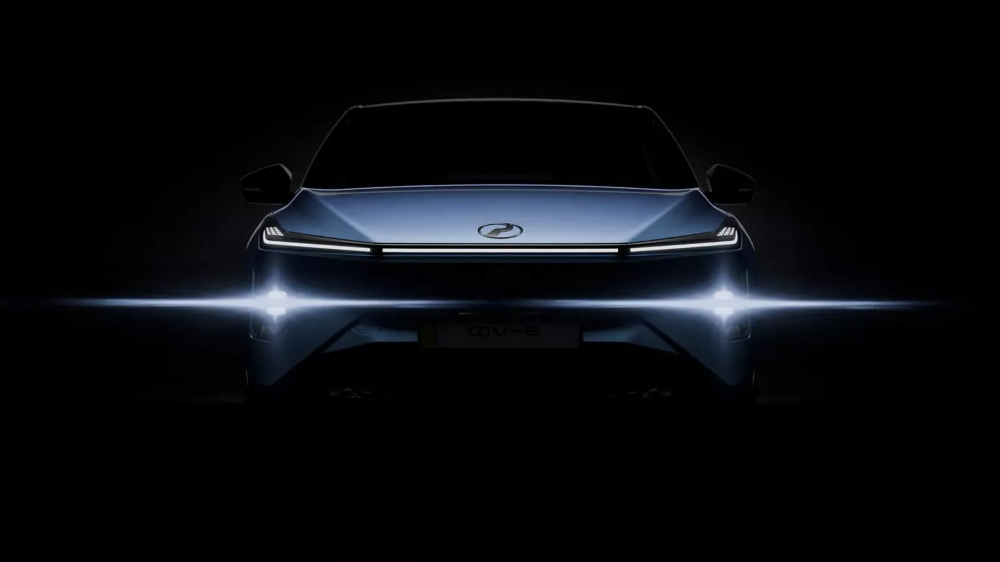
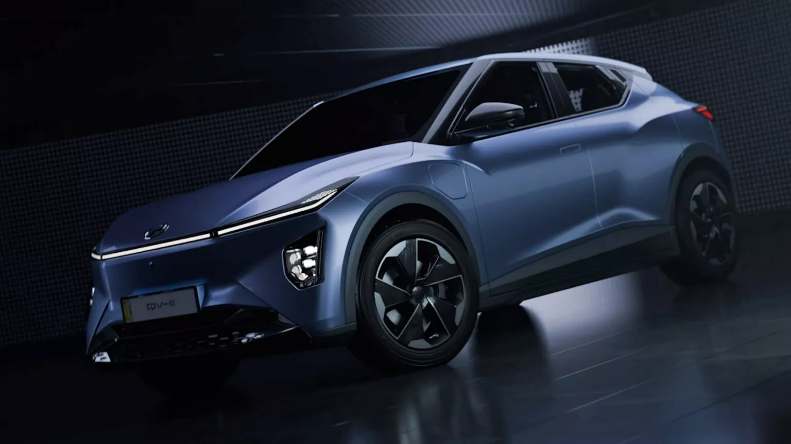
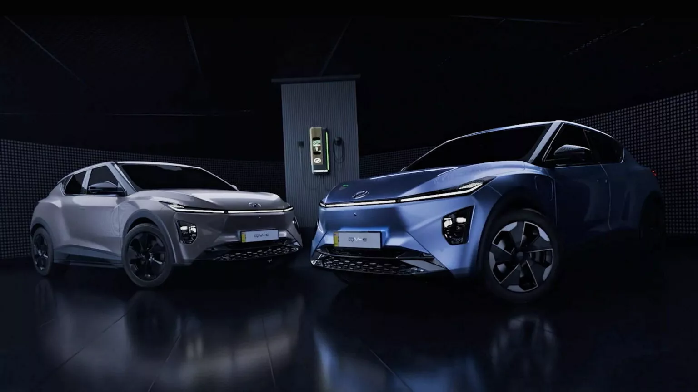
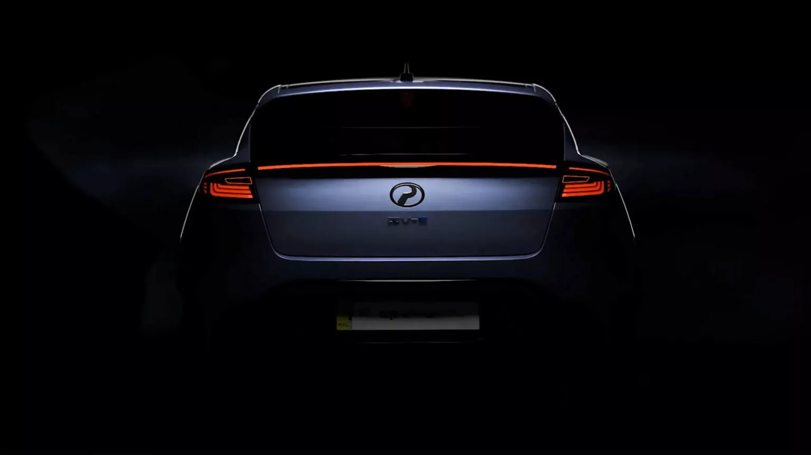

What is EV?
The transition toward electric mobility requires a clear and systematic understanding of the fundamental principles underlying electric vehicle (EV) technology. Prior to examining more advanced aspects such as charging speed, battery capacity, and driving range, it is essential to first establish a clear understanding of what constitutes an electric vehicle and how it differs from conventional automotive technologies.
This module provides the foundational knowledge necessary for such understanding. It introduces four key areas of EV knowledge: the definition of electric vehicles, the benefits associated with EV adoption, the various types of electric vehicles available in the market, and the different hybrid systems used in modern automotive design. A structured understanding of these elements enables a coherent comprehension of EV technology and prevents fragmented interpretation of more complex topics addressed in later modules.
At a fundamental level, an electric vehicle is defined as a vehicle that is propelled by an electric motor rather than a conventional petrol-powered internal combustion engine. In traditional internal combustion engine vehicles, petrol is combusted within the engine to generate energy. This combustion process produces mechanical power but also generates heat, noise, and exhaust emissions as by-products.
Electric vehicles operate through a different mechanism of energy conversion. Instead of relying on fuel combustion, electrical energy is stored within a rechargeable battery system. This stored energy is then supplied to an electric motor, which converts electrical energy into mechanical motion to drive the vehicle’s wheels. Because this propulsion system does not rely on fuel combustion, electric vehicles operate with significantly reduced mechanical noise and produce no tailpipe emissions.
Recognizing this distinction is essential because it shapes the perceived value of electric vehicles among consumers. Electric vehicles should not be understood merely as vehicles that operate without petrol; rather, they represent a fundamentally different approach to energy conversion and vehicle propulsion. For many consumers, this technological shift forms the basis of their interest in electric mobility and influences their evaluation of EVs as an alternative to conventional vehicles.

Benefits of EV
Benefits of Electric Vehicles
Electric vehicles (EVs) are increasingly considered by consumers due to several technological and operational advantages compared with conventional internal combustion engine (ICE) vehicles. These advantages are commonly associated with higher energy efficiency, lower operating and maintenance costs, reduced environmental impact, and an improved driving experience. Understanding these benefits is essential for explaining the growing interest in electric mobility.
One of the primary advantages of EVs is their higher energy efficiency. In conventional petrol-powered vehicles, energy is generated through the combustion of fuel within the engine. A significant portion of this energy is lost as heat during the combustion process, reducing the overall efficiency of the system. In contrast, electric vehicles utilize electric motors that convert electrical energy into mechanical motion more directly. This process involves fewer energy losses, allowing a larger proportion of stored energy to be used for vehicle propulsion. As a result, EVs generally demonstrate higher energy efficiency compared with traditional petrol or diesel vehicles.
Another important factor influencing EV adoption is the potential for reduced operating and maintenance costs. Electric vehicles contain fewer mechanical components than conventional vehicles. Components commonly found in internal combustion engines—such as engine oil systems, spark plugs, and complex multi-gear transmissions—are not required in most electric vehicle designs. The reduced number of moving parts simplifies the mechanical structure of the vehicle and can lower long-term maintenance requirements. Additionally, the cost of electricity per kilometre is typically lower than the cost of petrol or diesel, depending on the charging method and local energy pricing. This difference may contribute to lower daily operating expenses for EV users.
Environmental considerations also play a significant role in the growing adoption of electric vehicles. During operation, EVs produce zero tailpipe emissions because they do not rely on fuel combustion for propulsion. The absence of exhaust emissions helps reduce pollutants commonly associated with urban air pollution. Although the overall environmental impact of electric vehicles is influenced by the methods used to generate electricity within a country, the elimination of tailpipe emissions during driving remains a key environmental advantage of EV technology.
In addition to efficiency, cost, and environmental factors, the driving characteristics of electric vehicles contribute to their appeal. Electric motors are capable of delivering torque instantly, which allows the vehicle to accelerate smoothly and responsively without the delays associated with gear shifting in conventional vehicles. Furthermore, the absence of engine combustion significantly reduces mechanical noise and vibration, resulting in a quieter and more refined driving experience. These characteristics contribute to increased driving comfort and are often highlighted as distinctive features of electric mobility.

Types of Electric Vehicles
Electric vehicles can be classified into several categories based on their propulsion systems and the methods through which electrical energy is generated, stored, and utilized. Understanding these classifications is essential for developing a comprehensive understanding of modern vehicle electrification technologies. In the Malaysian automotive context, four primary categories are commonly identified: Hybrid Electric Vehicles (HEVs), Plug-in Hybrid Electric Vehicles (PHEVs), Battery Electric Vehicles (BEVs), and Fuel Cell Electric Vehicles (FCEVs). Each category differs in terms of energy source, charging capability, and the role of the electric motor in vehicle propulsion.
The Hybrid Electric Vehicle (HEV) integrates a conventional internal combustion engine with an electric motor to propel the vehicle. In this configuration, the electric motor functions as a supplementary power source that enhances fuel efficiency and supports vehicle performance under certain driving conditions. The battery in an HEV is not designed for external charging. Instead, it is replenished through regenerative braking and through energy generated by the internal combustion engine during vehicle operation. The vehicle’s control system determines the most efficient combination of engine and motor usage, enabling the vehicle to operate using the electric motor, the engine, or both simultaneously depending on driving conditions.
The Plug-in Hybrid Electric Vehicle (PHEV) also combines an internal combustion engine with an electric motor; however, it differs from a conventional hybrid through its ability to receive electrical energy from an external power source. The battery in a PHEV is larger than that of a typical hybrid vehicle and can be recharged through a charging cable connected to an electrical supply. This additional battery capacity allows the vehicle to operate in a fully electric driving mode for short distances before the internal combustion engine is engaged to support propulsion once the battery charge decreases. Consequently, PHEVs provide a transitional technology that combines the benefits of electric driving with the extended driving range associated with petrol-powered vehicles.
The Battery Electric Vehicle (BEV) represents a fully electric propulsion system in which the vehicle is powered entirely by electricity stored in a high-voltage battery. Unlike hybrid systems, BEVs do not contain an internal combustion engine and rely exclusively on electric motors to generate vehicle movement. The battery must be charged through external charging infrastructure, which may include alternating current (AC) charging systems commonly installed in residential or workplace environments, as well as direct current (DC) fast-charging systems available at public charging stations. Because BEVs operate without fuel combustion, they produce no tailpipe emissions during vehicle operation and are often regarded as a key component of the transition toward low-emission transportation systems.
The Fuel Cell Electric Vehicle (FCEV) represents another form of electric propulsion technology. Similar to BEVs, FCEVs utilize electric motors to drive the vehicle; however, the electricity required for propulsion is generated onboard through a hydrogen fuel cell system rather than stored primarily in a large battery. Within the fuel cell, hydrogen reacts with oxygen in an electrochemical process that produces electricity to power the motor. The only direct emission produced by this process is water vapour. Although fuel cell technology offers the potential for zero-emission mobility and rapid refuelling, the limited availability of hydrogen refuelling infrastructure currently restricts the widespread adoption of FCEVs in many markets, including Malaysia.

Hybrid System Configurations
Within the category of hybrid vehicles, different system architectures determine how the internal combustion engine and electric motor interact to propel the vehicle. Hybrid propulsion systems are generally classified into three primary configurations: series hybrid, parallel hybrid, and series–parallel hybrid systems. Although vehicles equipped with these systems may appear similar externally, the internal mechanisms governing energy flow, power distribution, and propulsion differ considerably. These variations influence the level of electric assistance provided, overall fuel efficiency, and the driving characteristics of the vehicle.
In a series hybrid system, the internal combustion engine does not directly drive the wheels. Instead, the engine functions primarily as a generator that produces electricity to charge the battery or supply power to the electric motor. The electric motor is solely responsible for driving the wheels. This configuration allows the vehicle to operate primarily as an electrically driven system while the engine supports energy generation when required.
In contrast, a parallel hybrid system allows both the internal combustion engine and the electric motor to directly contribute to vehicle propulsion. In this configuration, either the engine or the motor—or both simultaneously—can deliver power to the wheels depending on driving conditions and energy demands. The system automatically determines the most efficient power source, enabling improved fuel efficiency and performance.
A series–parallel hybrid system, often referred to as a power-split hybrid system, combines elements of both series and parallel configurations. In this architecture, the vehicle is capable of operating in multiple modes, allowing the electric motor, the internal combustion engine, or a combination of both to propel the vehicle. The system dynamically manages energy flow between the engine, electric motor, and battery to optimize efficiency under varying driving conditions. This flexibility enables the vehicle to switch seamlessly between electric, engine-driven, and combined propulsion modes.
Understanding these hybrid system configurations is important for developing a comprehensive understanding of how hybrid vehicle’s function. Although the external appearance of hybrid vehicles may not reveal these technical differences, the internal design of the propulsion system plays a significant role in determining vehicle performance, efficiency, and driving experience.

Apa itu EV
Peralihan kepada mobiliti elektrik bermula dengan kefahaman yang jelas. Sebelum bercakap tentang kelajuan pengecasan, kapasiti bateri, atau jarak pemanduan, seorang Sales Advisor perlu faham soalan asas ini: apakah sebenarnya kenderaan elektrik? Modul 1 meletakkan asas ini. Ia memperkenalkan empat bidang pengetahuan utama apakah EV, manfaat yang ditawarkan, jenis EV yang ada, dan sistem hibrid yang berbeza di pasaran. Tanpa kefahaman asas yang tersusun, penerangan seterusnya boleh menjadi bercelaru.
Pada tahap paling asas, kenderaan elektrik adalah kenderaan yang digerakkan oleh motor elektrik dan bukannya enjin petrol biasa. Dalam kenderaan enjin pembakaran dalaman biasa, petrol dibakar untuk menghasilkan tenaga, satu proses yang menghasilkan haba, bunyi, dan asap ekzos. EV berfungsi secara berbeza. Ia menggunakan elektrik yang tersimpan dalam bateri untuk menggerakkan motor elektrik, dan motor itu memutar roda. Intipatinya mudah: tanpa pembakaran petrol, tiada bunyi enjin dan tiada kebergantungan pada mekanisme pembakaran bahan api untuk bergerak. Jika kenderaan bergerak sepenuhnya atau sebahagian besar menggunakan kuasa motor elektrik, ia dikategorikan sebagai kenderaan elektrik.
Memahami perbezaan ini penting kerana ia terus mempengaruhi cara pelanggan menilai nilai kenderaan. Kenderaan elektrik bukan sekadar “kereta tanpa petrol”; ia mewakili kaedah yang berbeza untuk menukar tenaga menjadi gerakan. Bagi ramai pelanggan, perbezaan ini menjadi asas minat mereka terhadap EV.
Manfaat EV
Hari ini, pelanggan semakin berminat dengan EV atas pelbagai sebab. Salah satu kelebihan utama ialah kecekapan tenaga yang lebih tinggi. Dalam enjin petrol, sebahagian besar tenaga hilang sebagai haba semasa pembakaran. Motor elektrik menukar tenaga elektrik menjadi gerakan secara lebih langsung, menjadikan tenaga kurang terbuang dan kecekapan lebih baik. Peningkatan ini biasanya dapat dirasai dalam kelancaran pemanduan serta pengurangan kos operasi.
Penjimatan kos juga menjadi faktor penting. Kenderaan elektrik mempunyai lebih sedikit komponen bergerak berbanding kereta biasa. Ia tidak memerlukan minyak enjin, palam pencucuh, atau sistem transmisi kompleks dengan pelbagai gear. Struktur mekanikal yang ringkas ini biasanya mengurangkan keperluan penyelenggaraan dari masa ke masa. Selain itu, kos elektrik per kilometer biasanya lebih rendah daripada petrol atau diesel, menjadikan operasi harian lebih menjimatkan bergantung kepada cara pengecasan dan gaya pemanduan pelanggan.
Pertimbangan alam sekitar juga mempengaruhi keputusan pelanggan. EV tidak menghasilkan sebarang ekzos semasa beroperasi. Tiada proses pembakaran berlaku semasa pemanduan, jadi tiada pelepasan gas yang menyumbang kepada pencemaran udara bandar. Walaupun kesan alam sekitar bergantung kepada bagaimana elektrik dijana di peringkat negara, tiada pelepasan semasa memandu tetap menjadi faktor penarik utama.
Selain kecekapan dan kos, pengalaman memandu EV juga menarik pelanggan. Motor elektrik memberikan tork segera, menghasilkan pecutan yang lancar tanpa kelewatan gear. Tiada bunyi enjin menjadikan pemanduan lebih senyap, selesa, dan halus. Sebagai Sales Advisor, matlamat bukan sekadar menerangkan manfaat ini tetapi membantu pelanggan faham bagaimana ia memberi nilai peribadi lebih keselesaan, penjimatan jangka panjang, dan pilihan mobiliti yang lebih bertanggungjawab.
Jenis EV
Di Malaysia, kenderaan elektrik boleh dibahagikan kepada empat kategori utama. Memahami perbezaan antara mereka penting untuk memberi panduan yang tepat kepada pelanggan. Ramai pelanggan sering keliru dengan kategori ini, dan penerangan yang tidak jelas boleh menyebabkan salah faham.
Kategori pertama ialah Hybrid Electric Vehicle (HEV). Kenderaan ini menggunakan enjin petrol dan motor elektrik, tetapi tidak boleh dicas secara luaran. Bateri mengecas sendiri melalui brek regeneratif dan tenaga yang dihasilkan enjin. Bergantung pada keadaan pemanduan, kenderaan boleh menggunakan motor, enjin, atau gabungan kedua-duanya. Intipati mesej untuk HEV ialah ia mengecas sendiri dan tidak memerlukan plug luaran.
Kategori kedua ialah Plugin Hybrid Electric Vehicle (PHEV). Sama seperti HEV, ia menggunakan gabungan enjin petrol dan motor elektrik, tetapi dengan satu perbezaan penting: boleh dicas luaran. PHEV membolehkan jarak pendek dipandu hanya menggunakan kuasa elektrik. Apabila bateri hampir habis, enjin petrol akan berfungsi secara automatik. Perbezaan mudah tetapi penting: HEV tidak boleh dipasang plug, manakala PHEV boleh.
Kategori ketiga ialah Battery Electric Vehicle (BEV). Ini adalah kenderaan elektrik sepenuhnya yang dijana sepenuhnya oleh elektrik tanpa enjin petrol. Tenaga dibekalkan melalui bateri voltan tinggi, dan pengecasan boleh dilakukan menggunakan pengecas AC di rumah atau DC pantas di stesen awam. BEV menghasilkan sifar ekzos semasa bergerak. Apabila pelanggan menyebut “EV”, mereka biasanya merujuk kepada BEV.
Kategori keempat ialah Fuel Cell Electric Vehicle (FCEV). Seperti BEV, FCEV beroperasi sepenuhnya dengan motor elektrik, tetapi tenaga dijana melalui sel bahan api hidrogen dan bukannya bateri plug-in. Satu-satunya pelepasan ialah wap air. Walaupun teknologi ini penting, infrastruktur hidrogen yang terhad di Malaysia menjadikan pelanggan hari ini lebih cenderung berhadapan dan mempertimbangkan HEV, PHEV, dan BEV berbanding FCEV.
Sistem Dalam Hibrid
Dalam segmen hibrid, sistemnya berbeza-beza bergantung pada cara enjin dan motor elektrik berinteraksi. Konfigurasi hibrid biasanya dibahagikan kepada tiga jenis: series hybrid, parallel hybrid, dan series-parallel hybrid. Walaupun kenderaan ini kelihatan sama dari luar, aliran tenaga dalaman, sistem membuat keputusan, dan ciri pemanduan berbeza dengan ketara. Setiap konfigurasi menawarkan tahap bantuan elektrik, kecekapan bahan api, dan pengalaman pemanduan yang berbeza. Memahami perbezaan ini membolehkan Sales Advisor membuat perbandingan dengan jelas dan yakin.
Menjelang akhir modul ini, asas kenderaan elektrik sepatutnya difahami dengan logik dan mudah, bukan teknikal atau menakutkan. EV ditakrifkan oleh cara mereka menjana dan menggunakan tenaga. Manfaatnya datang dari kecekapan yang lebih baik, pengurangan kerumitan mekanikal, dan pemanduan yang lebih lancar. Kategori — HEV, PHEV, BEV, dan FCEV — mewakili pendekatan berbeza terhadap elektrifikasi, masing-masing memenuhi keperluan atau kehendak pelanggan yang berbeza.
Bagi Sales Advisor, kejelasan adalah kelebihan strategik. Apabila anda menerangkan asas EV dengan yakin dan tepat, pelanggan lebih yakin dalam membuat keputusan. Pengetahuan membina kredibiliti. Kredibiliti membina kepercayaan. Dan akhirnya, kepercayaan membentuk keputusan pembelian.